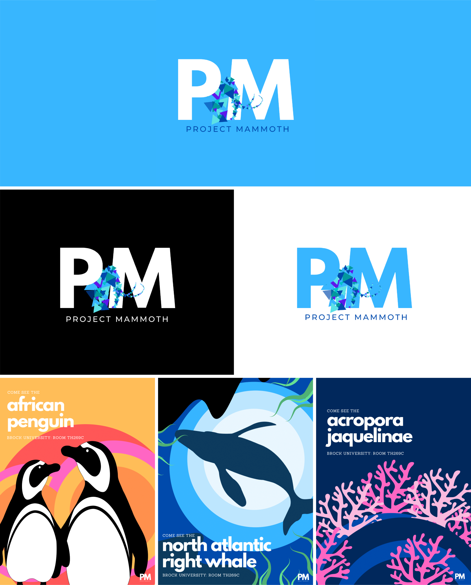
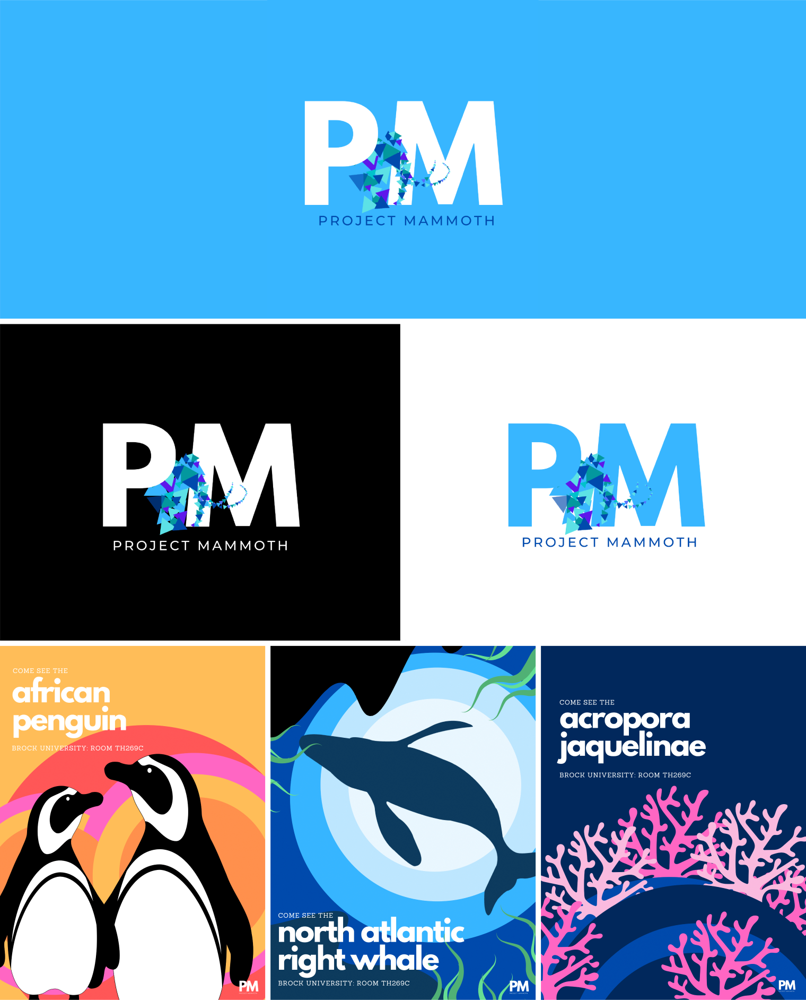
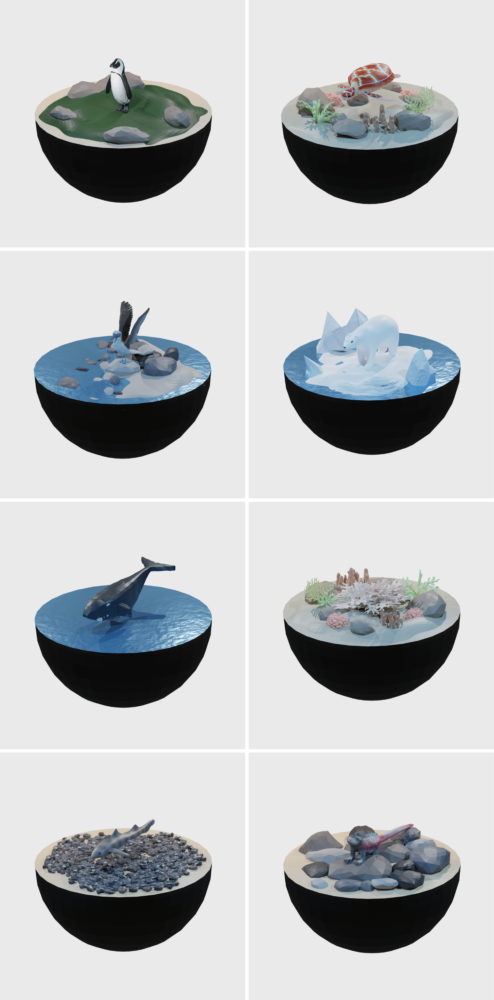

Project Mammoth is an interactive installation about endangered marine species that combines hologram
technology with audio/visual and motion components. It aims to provide
a unique educational experience for all ages and encourages educators to considers new methods of
presenting information on critical topics such as biodiversity loss and the impact of human presence
on nature.
This installation is the first project of its kind to be created in Brock
University's Interactive Arts & Sciences program. It was put together by a team of twelve third-year
students over a span of eight months and displayed in the university's Digital Scholarship Lab
throughout the 2021/22 exam period.


 

Throughout the duration of this project, I was appointed the team lead and became part of the
modelling team. I ensured the group worked according to the production schedule generated during the
planning phase, was involved in creating process documentation for all assets in the installation,
and acted as a bridge between faculty and students for communications.
My role as a modeller
involved creating four of the eight animal models: the African penguin, the striped smooth hound
shark, the acropora jacquelinae coral, and the Arctic polar bear. Each model was created in Blender using a low-poly style; texture
painting was used to emphasize key details or markers on the body.


I worked on creating several environments to
showcase their habitats, in addition to video-based renders that would be displayed on the
hologram's plexiglass prism. Myself and the modelling team experimented with several iterations of the environments, but ultimately found that the dome shape would fit best with the projection of the image onto the prism.

PROJECT LEAD: Tany Dourev
SECONDARY LEAD: Samantha
Savage
RESEARCH TEAM:
Kathleen MacDonald, Evan Mason, Will Paskulin, Rogo Jean.
MODELLING
TEAM: Tany Dourev, Will
Paskulin, Samantha Savage, Xu Yankeer.
SOUND TEAM: Evan Mason, Wu
Dongjian, Rigel Quindipan,
Xu Yankeer.
INSTALLATION TEAM: Kathleen MacDonald, Evan Mason, Rogo
Jean, Rigel Quindipan,
Shannon Kelly, Patrick Arenas.
CODING TEAM: Shannon Kelly, Mathhew
McNeil.
Thank you to
Dr. Aaron Mauro of Brock University for his support and guidance throughout the
project.